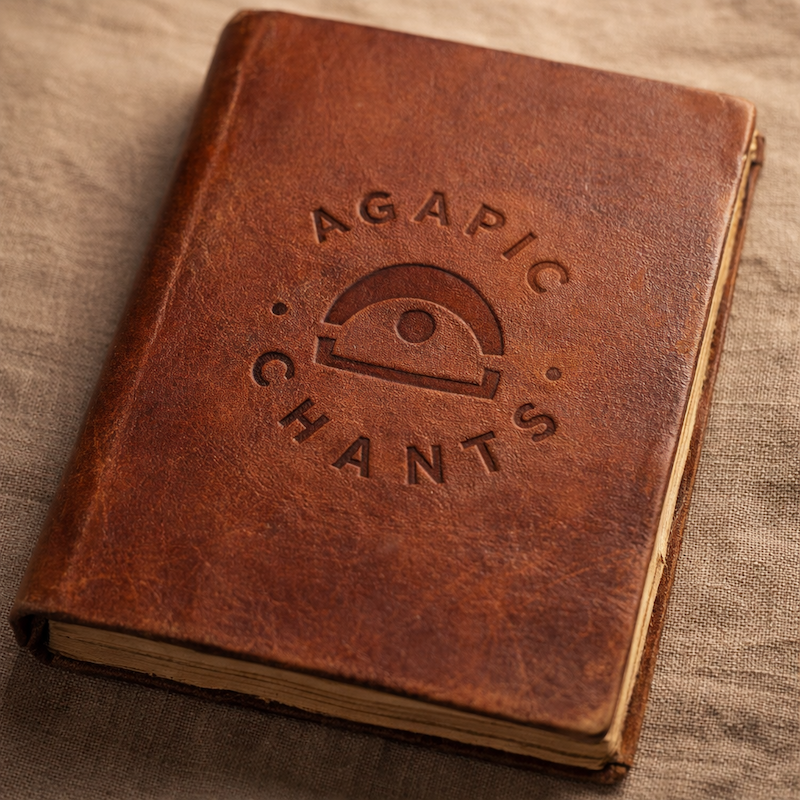

Come sing with us.
Agapic Chants is a project led by the Bonn-based singer-songwriter Nathan Vanderpool (Secret Chord Collective). It takes its name from the Greek agape, unconditional love. Sitting together with people, he co-creates simple musical repetitions based on the hopes and struggles of their lives.

Three ways in



About Nathan
I've been writing songs since I was 13, and I've spent the years since split between music and a quieter track: a doctorate in the sociology of religion, time in monasteries, and training in how people work through what's hard. I make songs with people, and then we sing them.
Music and singing are central practices for connecting to myself and the people around me. The agapic chants project is my attempt to spread the depth that comes along with that, and encourage everyone to remember the joy of singing.

Stay in the loop
I host chanting evenings, perform as a singer-songwriter, and run retreats. Sign up and I'll send you the dates and links to new chants as they get recorded. Once a month or so. Unsubscribe whenever.
Even across the darkness, we can hear each other sing.
If they've meant something to you, your support helps make more of them.